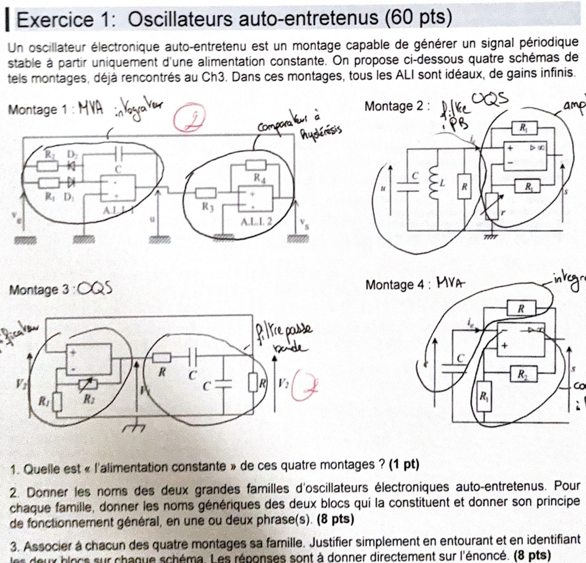
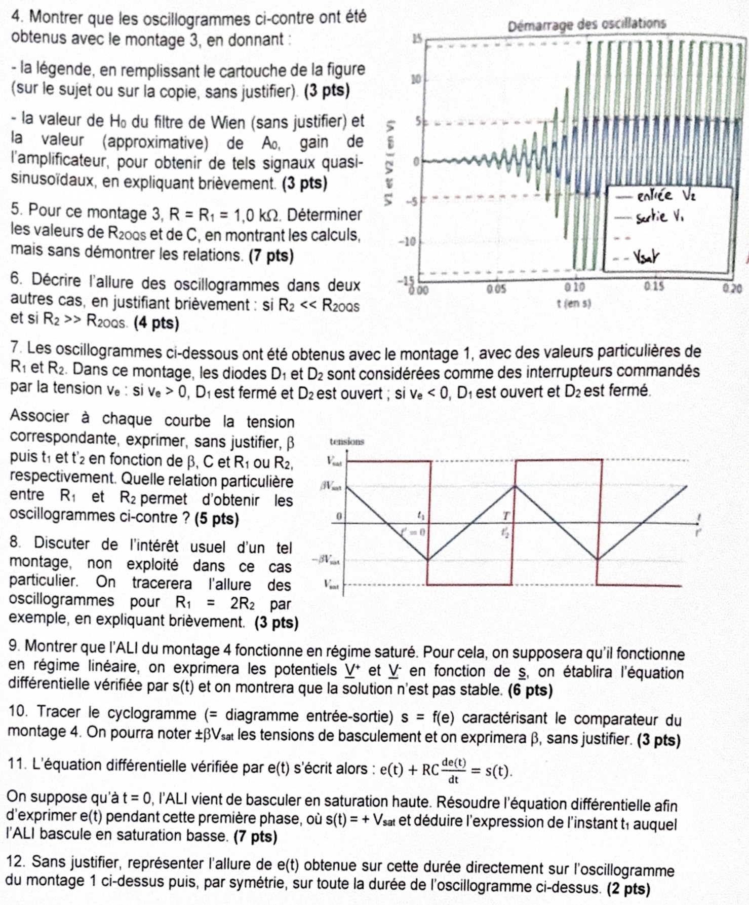
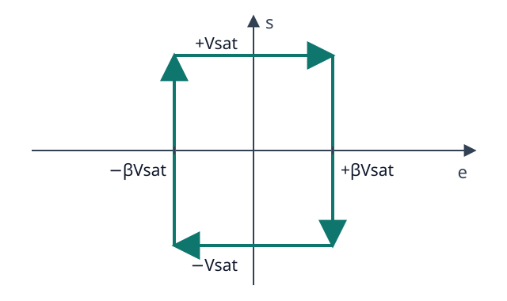
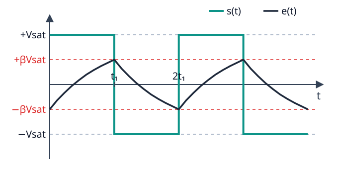
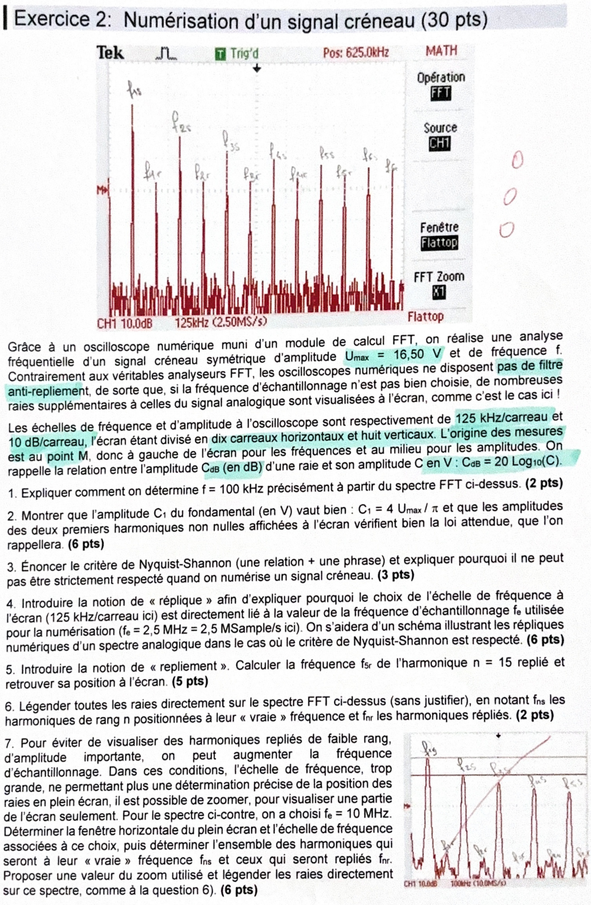
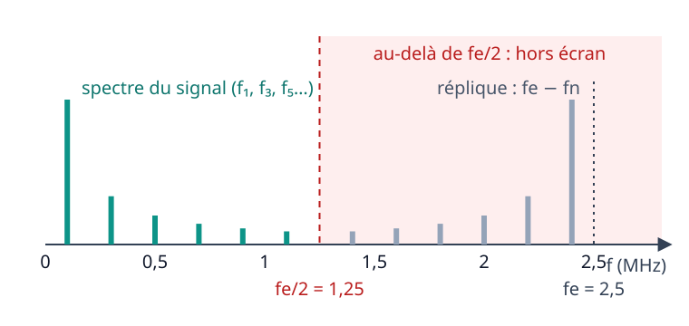
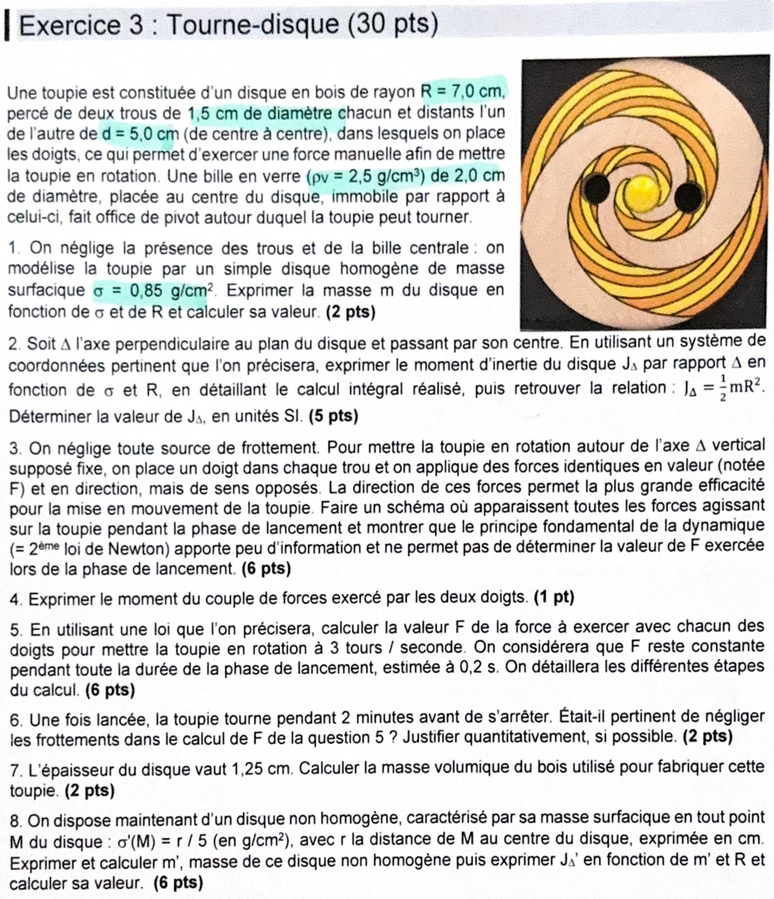

DS2 de l'année dernière — corrigé complet
Sujet officiel du DS2 d'AEM2 (novembre 2025) : 2 h, barème sur 120 points, aucun document ni calculatrice. Trois exercices : oscillateurs auto-entretenus (60 pts), numérisation d'un signal créneau (30 pts) et tourne-disque (30 pts). L'énoncé (photo) est juste au-dessus de chaque correction. Aucun corrigé officiel n'a été fourni : la correction est rédigée par nous. La question bonus (hors barème) n'est pas traitée.
Exercice 1 — Oscillateurs auto-entretenus · 60 pts

1) « L'alimentation constante » des quatre montages (1 pt)
Étape 1 : chercher la source d'énergie
Aucun des quatre montages ne reçoit de signal d'entrée extérieur.
Les ALI, eux, sont alimentés par une source de tension continue (\(\pm V_{CC}\)). C'est elle qui fixe les tensions de saturation \(\pm V_{sat}\).
2) Les deux familles d'oscillateurs, leurs blocs et leur principe (8 pts)
Étape 1 : oscillateurs quasi-sinusoïdaux (OQS)
- Blocs : un amplificateur (gain \(A\)) et un filtre sélectif passe-bande (filtre de Wien, circuit LC…).
- Principe : la sortie du filtre est réinjectée à l'entrée de l'amplificateur (bouclage). À la fréquence centrale \(f_0\) du filtre, le gain de boucle vaut 1 avec un déphasage nul : une sinusoïde de fréquence \(f_0\) s'entretient d'elle-même.
Étape 2 : oscillateurs de relaxation (multivibrateurs astables, MVA)
- Blocs : un comparateur à hystérésis et un intégrateur (ou un simple circuit RC).
- Principe : la tension intégrée monte ou descend jusqu'à un seuil \(\pm\beta V_{sat}\). Le comparateur bascule alors, ce qui inverse le sens de variation. On obtient un signal carré (sortie du comparateur) et un signal triangulaire ou en arcs d'exponentielle (sortie de l'intégrateur).
3) Famille de chaque montage, blocs identifiés (8 pts)
Étape 1 : reconnaître les blocs sur chaque schéma
- Montage 1 : MVA. Bloc de gauche = intégrateur (ALI 1, condensateur \(C\) entre sortie et entrée −, résistances \(R_1\), \(R_2\) avec les diodes). Bloc de droite = comparateur à hystérésis (ALI 2, \(R_3\), \(R_4\) : la sortie est ramenée sur l'entrée +).
- Montage 2 : OQS. Bloc de gauche = filtre passe-bande LC (\(C\), \(L\), \(R\) en parallèle). Bloc de droite = amplificateur (ALI avec \(R_1\) et la résistance réglable \(r\)).
- Montage 3 : OQS. Bloc de gauche = amplificateur non inverseur (ALI, \(R_1\), \(R_2\) réglable). Bloc de droite = filtre de Wien passe-bande (\(R\) et \(C\) en série, puis \(C\) et \(R\) en parallèle).
- Montage 4 : MVA. Circuit RC (\(R\) de la sortie vers l'entrée −, \(C\) vers la masse) qui joue le rôle d'intégrateur. Comparateur à hystérésis (\(R_2\) de la sortie vers l'entrée +, \(R_1\) de l'entrée + vers la masse).

4) Oscillogrammes du montage 3 : légende, \(H_0\) et \(A_0\) (3 + 3 pts)
Étape 1 : la légende
- Courbe bleue, d'amplitude finale 5 V : entrée \(V_2\) de l'amplificateur (c'est la sortie du filtre de Wien).
- Courbe verte, d'amplitude finale 15 V : sortie \(V_1\) de l'ALI.
- Tirets à \(\pm 15\) V : \(\pm V_{sat}\). Tirets à \(\pm 5\) V : amplitude finale de \(V_2\), soit \(V_{sat}/3\).
Étape 2 : \(H_0\) et \(A_0\)
Pour des oscillations quasi sinusoïdales, le gain de boucle doit valoir 1 :
\[ A_0\,H_0=1 \] \[ A_0=\frac{1}{H_0}=3 \]On le vérifie sur l'oscillogramme : \(V_1/V_2=15/5=3\).
5) Valeurs de \(R_{2OQS}\) et de \(C\) pour \(R=R_1=1{,}0\ \text{k}\Omega\) (7 pts)
Étape 1 : gain de l'amplificateur non inverseur
On impose \(A_0=3\) :
\[ 1+\frac{R_{2OQS}}{R_1}=3 \] \[ R_{2OQS}=2R_1=2\times1{,}0\ \text{k}\Omega \]Étape 2 : lire la fréquence sur l'oscillogramme
Entre \(t=0{,}10\) s et \(t=0{,}15\) s, on compte environ 8 périodes.
\[ T\approx\frac{0{,}05\ \text{s}}{8}\approx6{,}3\ \text{ms} \] \[ f_0=\frac1T\approx160\ \text{Hz} \]Étape 3 : en déduire \(C\)
6) Allure des oscillogrammes si \(R_2\ll R_{2OQS}\) et si \(R_2\gg R_{2OQS}\) (4 pts)
- \(R_2\ll R_{2OQS}\) : \(A_0<3\), donc \(A_0H_0<1\). À chaque tour de boucle le signal est atténué : les oscillations s'amortissent et \(V_1\), \(V_2\) tendent vers 0. Aucune oscillation ne s'entretient.
- \(R_2\gg R_{2OQS}\) : \(A_0\gg3\), donc \(A_0H_0\gg1\). L'amplitude croît très vite jusqu'à la saturation. \(V_1\) devient quasi rectangulaire (écrêtée à \(\pm V_{sat}\)) et \(V_2\) est très déformée : le signal n'est plus sinusoïdal.
7) Montage 1 : tensions, \(\beta\), \(t_1\), \(t'_2\) et relation entre \(R_1\) et \(R_2\) (5 pts)
Étape 1 : associer les courbes
- Courbe rouge, rectangulaire entre \(\pm V_{sat}\) : sortie du comparateur \(v_s\), qui est aussi \(v_e\), l'entrée de l'intégrateur.
- Courbe noire, triangulaire entre \(\pm\beta V_{sat}\) : sortie \(u\) de l'intégrateur.
Étape 2 : \(\beta\)
D'après le schéma, \(u\) arrive sur l'entrée + par \(R_3\) et \(v_s\) y revient par \(R_4\). Le comparateur bascule quand \(u=\mp\dfrac{R_3}{R_4}v_s\) :
\[ \beta=\frac{R_3}{R_4} \]Étape 3 : \(t_1\) et \(t'_2\)
- Pour \(v_e=+V_{sat}\), seule \(D_1\) conduit : \(R=R_1\). \(u\) descend de 0 à \(-\beta V_{sat}\) avec la pente \(-V_{sat}/(R_1C)\) : \[ t_1=\beta R_1 C \]
- Pour \(v_e=-V_{sat}\), seule \(D_2\) conduit : \(R=R_2\). \(u\) remonte de \(-\beta V_{sat}\) à \(+\beta V_{sat}\) (variation \(2\beta V_{sat}\)) en une durée : \[ t'_2=2\beta R_2 C \]
Étape 4 : relation entre \(R_1\) et \(R_2\)
Sur l'oscillogramme, la montée et la descente du triangle durent le même temps (signal carré de rapport cyclique 1/2). La descente complète dure \(2\beta R_1C\), la montée \(2\beta R_2C\).
8) Intérêt usuel de ce montage, allure pour \(R_1=2R_2\) (3 pts)
Étape 1 : à quoi servent les diodes
Les diodes donnent une résistance différente à la montée (\(R_2\)) et à la descente (\(R_1\)). On peut donc régler le rapport cyclique du signal carré et la symétrie du triangle. C'est l'intérêt usuel de ce générateur. Ici, avec \(R_1=R_2\), cette possibilité n'est pas exploitée.
Étape 2 : cas \(R_1=2R_2\)
- Durée à \(v_s=+V_{sat}\) (descente de \(u\)) : \(2\beta R_1C=4\beta R_2C\).
- Durée à \(v_s=-V_{sat}\) (montée de \(u\)) : \(2\beta R_2C\).
- Période : \(T=6\beta R_2C\).
9) Montage 4 : montrer que l'ALI fonctionne en régime saturé (6 pts)
Étape 1 : les potentiels d'entrée
Entrée + : pont diviseur \(R_2\) (vers la sortie) et \(R_1\) (vers la masse).
Entrée − : elle est reliée au condensateur, donc \(V_-=e\).
Étape 2 : hypothèse du régime linéaire
En régime linéaire, ALI idéal : \(V_+=V_-\), donc :
\[ e=\beta s \]Étape 3 : équation différentielle en \(s\)
Le circuit RC donne :
\[ e+RC\frac{de}{dt}=s \]On remplace \(e\) par \(\beta s\) :
\[ \beta s+\beta RC\frac{ds}{dt}=s \] \[ \frac{ds}{dt}-\frac{1-\beta}{\beta RC}\,s=0 \]Étape 4 : stabilité
\[ s(t)=s(0)\,\exp\!\left(\frac{1-\beta}{\beta RC}\,t\right) \]Comme \(0<\beta<1\), l'exposant est positif : la moindre perturbation croît exponentiellement.
10) Cyclogramme \(s=f(e)\) du comparateur du montage 4 (3 pts)
Étape 1 : les deux seuils
- Si \(s=+V_{sat}\) : \(V_+=\beta V_{sat}\). La sortie reste haute tant que \(e<\beta V_{sat}\), elle bascule à \(-V_{sat}\) quand \(e\) dépasse \(+\beta V_{sat}\).
- Si \(s=-V_{sat}\) : \(V_+=-\beta V_{sat}\). La sortie bascule à \(+V_{sat}\) quand \(e\) descend sous \(-\beta V_{sat}\).

11) Résolution de \(e+RC\dfrac{de}{dt}=s\) pendant la première phase, instant \(t_1\) (7 pts)
Étape 1 : condition initiale
À \(t=0\), l'ALI vient de basculer en saturation haute. Ce basculement se produit quand \(e\) atteint le seuil bas :
\[ e(0)=-\beta V_{sat} \qquad s=+V_{sat} \]Étape 2 : solution de l'équation
Ici \(\tau=RC\) et \(Y_\infty=V_{sat}\) :
\[ e(t)=V_{sat}+\big(-\beta V_{sat}-V_{sat}\big)e^{-t/RC} \] \[ e(t)=V_{sat}\Big[1-(1+\beta)\,e^{-t/RC}\Big] \]Étape 3 : instant du basculement
L'ALI bascule en saturation basse quand \(e(t_1)=+\beta V_{sat}\) :
\[ 1-(1+\beta)\,e^{-t_1/RC}=\beta \] \[ e^{-t_1/RC}=\frac{1-\beta}{1+\beta} \]La phase suivante est symétrique (même calcul en changeant les signes) : la période est \(T=2t_1\).
12) Allure de \(e(t)\) sur toute la durée (2 pts)
\(e(t)\) est formée d'arcs d'exponentielle qui oscillent entre \(-\beta V_{sat}\) et \(+\beta V_{sat}\). Chaque arc part vers l'asymptote \(\pm V_{sat}\) imposée par \(s\), et s'arrête au seuil où l'ALI bascule. Contrairement au montage 1, les rampes ne sont plus droites mais courbées (concavité tournée vers l'axe).

Exercice 2 — Numérisation d'un signal créneau · 30 pts

1) Déterminer \(f=100\) kHz à partir du spectre (2 pts)
Étape 1 : repérer le fondamental
Le fondamental est la raie la plus haute, la première après l'origine M.
Elle est à 0,8 carreau de M. Avec 125 kHz par carreau :
\[ f=0{,}8\times125\ \text{kHz}=100\ \text{kHz} \]Étape 2 : mesure plus précise
Les grandes raies (harmoniques impairs) sont espacées de \(2f\). On mesure plusieurs écarts d'un coup : entre la 1re et la 6e grande raie il y a 8 carreaux, soit \(5\times2f=1\ \text{MHz}\).
2) Amplitude \(C_1=4U_{max}/\pi\) et loi des harmoniques (6 pts)
Étape 1 : le fondamental
\[ C_1=\frac{4\times16{,}50}{\pi}=21{,}0\ \text{V} \] \[ C_{1,dB}=20\log(21{,}0)\approx26{,}4\ \text{dB} \]Étape 2 : la loi attendue
Les harmoniques pairs sont nuls. Les harmoniques impairs décroissent en \(1/n\). Le deuxième harmonique non nul est donc \(n=3\) :
\[ C_3=\frac{C_1}{3}=7{,}0\ \text{V} \] \[ C_{1,dB}-C_{3,dB}=20\log 3\approx9{,}5\ \text{dB} \]Étape 3 : vérification à l'écran
À 10 dB par carreau, la raie \(f_3\) doit être environ un carreau sous la raie \(f_1\). C'est ce qu'on lit.
3) Critère de Nyquist-Shannon (3 pts)
Pour numériser un signal sans perte, la fréquence d'échantillonnage doit être supérieure au double de la plus grande fréquence présente dans son spectre.
4) Notion de réplique, lien entre l'échelle 125 kHz/carreau et \(f_e\) (6 pts)
Étape 1 : les répliques
Échantillonner à \(f_e\) rend le spectre périodique en fréquence. Chaque raie \(f_n\) du signal est recopiée en \(kf_e\pm f_n\) (\(k\) entier). Ces copies sont les répliques.
Si Shannon est respecté, la réplique autour de \(f_e\) commence au-dessus de \(f_e/2\) : elle ne recouvre pas le vrai spectre (schéma ci-dessous).
Étape 2 : lien avec l'échelle
L'oscilloscope n'affiche que la bande \([0\,;\,f_e/2]\), la seule qui ne contient que l'information utile. Il répartit cette bande sur les 10 carreaux :
\[ \frac{f_e/2}{10}=\frac{2{,}5\ \text{MHz}}{20}=125\ \text{kHz/carreau} \]
5) Repliement, fréquence de l'harmonique \(n=15\) replié (5 pts)
Étape 1 : la notion
Un harmonique \(f_n>f_e/2\) n'apparaît pas à sa vraie fréquence. C'est sa réplique \(|f_e-f_n|\), qui tombe dans \([0\,;\,f_e/2]\), qui s'affiche : c'est le repliement (symétrie par rapport à \(f_e/2\)).
Étape 2 : application à \(n=15\)
\[ f_{15}=15\times100\ \text{kHz}=1{,}5\ \text{MHz}>1{,}25\ \text{MHz} \] \[ f_{15r}=2{,}5-1{,}5=1{,}0\ \text{MHz} \] \[ \frac{1000\ \text{kHz}}{125\ \text{kHz/carreau}}=8\ \text{carreaux} \]6) Légende de toutes les raies (2 pts)
- Raies à leur vraie fréquence (grandes) : \(f_{1s}\) = 0,1 MHz, \(f_{3s}\) = 0,3, \(f_{5s}\) = 0,5, \(f_{7s}\) = 0,7, \(f_{9s}\) = 0,9, \(f_{11s}\) = 1,1 MHz (0,8 ; 2,4 ; 4 ; 5,6 ; 7,2 ; 8,8 carreaux).
- Raies repliées (petites), \(f_{nr}=2{,}5-n\times0{,}1\) MHz : \(f_{23r}\) = 0,2 MHz, \(f_{21r}\) = 0,4, \(f_{19r}\) = 0,6, \(f_{17r}\) = 0,8, \(f_{15r}\) = 1,0, \(f_{13r}\) = 1,2 MHz (1,6 ; 3,2 ; 4,8 ; 6,4 ; 8 ; 9,6 carreaux).
7) \(f_e=10\) MHz : fenêtre, échelle, harmoniques vrais ou repliés, zoom (6 pts)
Étape 1 : plein écran
\[ \frac{f_e}{2}=5\ \text{MHz} \quad\Rightarrow\quad \frac{5\ \text{MHz}}{10}=500\ \text{kHz/carreau} \]En plein écran, on voit de 0 à 5 MHz. Les raies seraient à 0,2 carreau les unes des autres : trop serrées pour être lues.
Étape 2 : quels harmoniques sont repliés
- Vraie fréquence \(f_{ns}\) : \(nf<5\) MHz, soit \(n=1,3,5,\dots,49\).
- Repliés \(f_{nr}\) : \(n\ge51\), affichés en \(|10-0{,}1\,n|\) MHz. Leur amplitude est faible (au plus \(C_1/51\), soit \(-34\) dB).
Étape 3 : le zoom
La capture indique 100 kHz par carreau. Le zoom vaut donc :
\[ \frac{500}{100}=5 \]La fenêtre affichée va de 0 à 1 MHz. On y voit \(f_{1s},f_{3s},f_{5s},f_{7s},f_{9s}\) (1 ; 3 ; 5 ; 7 ; 9 carreaux). Les seuls repliés qui tombent dans cette fenêtre sont \(n=91\) à \(109\). Ils se superposent exactement aux mêmes positions et sont négligeables (moins de \(1/91\) du fondamental).
Exercice 3 — Tourne-disque · 30 pts

1) Masse \(m\) du disque homogène (2 pts)
2) Moment d'inertie \(J_\Delta\) par calcul intégral (5 pts)
Étape 1 : coordonnées
On prend les coordonnées polaires \((r,\theta)\) centrées sur l'axe \(\Delta\). Un élément de surface vaut \(dS=r\,dr\,d\theta\), sa masse \(dm=\sigma r\,dr\,d\theta\), et sa distance à \(\Delta\) est \(r\).
Étape 2 : intégration
\[ J_\Delta=\int_0^{2\pi}\!\!\int_0^R r^2\,\sigma\,r\,dr\,d\theta \] \[ J_\Delta=\sigma\times2\pi\times\frac{R^4}{4}=\frac{\pi\sigma R^4}{2} \]Étape 3 : retrouver \(\tfrac12 mR^2\)
\[ J_\Delta=\frac12\,(\sigma\pi R^2)\,R^2=\frac12\,mR^2 \]Étape 4 : application numérique en SI
\[ J_\Delta=\frac12\times0{,}131\ \text{kg}\times(0{,}070\ \text{m})^2 \]3) Bilan des forces au lancement, apport du PFD (6 pts)
Étape 1 : forces sur la toupie
- Le poids \(\vec P=m\vec g\), vertical, vers le bas.
- La réaction \(\vec R\) de la bille-pivot, verticale (pas de frottement).
- Les deux forces des doigts \(\vec F_1\) et \(\vec F_2=-\vec F_1\), horizontales, perpendiculaires au segment qui relie les trous (direction la plus efficace), appliquées à \(d/2\) de l'axe, de part et d'autre.
Étape 2 : appliquer le PFD
Le centre \(G\) est sur l'axe fixe : \(\vec a_G=\vec 0\).
\[ \vec P+\vec R+\vec F_1+\vec F_2=\vec 0 \]Comme \(\vec F_1+\vec F_2=\vec 0\), il reste :
\[ \vec R=-\vec P \]4) Moment du couple exercé par les deux doigts (1 pt)
Chaque force a un bras de levier \(d/2\) et elles font tourner dans le même sens :
\[ \Gamma=2\times F\times\frac d2 \]5) Force \(F\) pour atteindre 3 tours/s en 0,2 s (6 pts)
Étape 1 : la loi
Étape 2 : intégrer avec \(F\) constante
La toupie part du repos, \(\Gamma=Fd\) est constant pendant \(\Delta t\) :
\[ J_\Delta\,\omega_f=F\,d\,\Delta t \] \[ F=\frac{J_\Delta\,\omega_f}{d\,\Delta t} \]Étape 3 : vitesse angulaire finale
\[ \omega_f=2\pi\times3=6\pi\approx18{,}8\ \text{rad/s} \]Étape 4 : application numérique
\[ F=\frac{3{,}2\cdot10^{-4}\times18{,}8}{0{,}050\times0{,}2} \]6) Était-il pertinent de négliger les frottements ? (2 pts)
Étape 1 : estimer le couple de frottement
La toupie s'arrête en \(\Delta t'=120\) s. Avec un couple de frottement constant :
\[ \Gamma_f=\frac{J_\Delta\,\omega_f}{\Delta t'}=\frac{3{,}2\cdot10^{-4}\times18{,}8}{120}\approx5\cdot10^{-5}\ \text{N·m} \]Étape 2 : comparer au couple de lancement
\[ \Gamma=F\,d=0{,}60\times0{,}050=3{,}0\cdot10^{-2}\ \text{N·m} \] \[ \frac{\Gamma_f}{\Gamma}=\frac{0{,}2\ \text{s}}{120\ \text{s}}\approx2\cdot10^{-3} \]7) Masse volumique du bois (épaisseur 1,25 cm) (2 pts)
\[ \rho=\frac{m}{\pi R^2 e}=\frac{\sigma}{e} \] \[ \rho=\frac{0{,}85\ \text{g/cm}^2}{1{,}25\ \text{cm}}=0{,}68\ \text{g/cm}^3 \]8) Disque non homogène \(\sigma'=r/5\) : \(m'\) et \(J'_\Delta\) (6 pts)
Étape 1 : la masse
On reste en cm et en g. On découpe le disque en couronnes de rayon \(r\), d'épaisseur \(dr\) et d'aire \(2\pi r\,dr\) :
\[ m'=\int_0^R\frac r5\,2\pi r\,dr=\frac{2\pi}{5}\cdot\frac{R^3}{3}=\frac{2\pi R^3}{15} \] \[ m'=\frac{2\pi\times343}{15}\approx144\ \text{g} \]Étape 2 : le moment d'inertie
\[ J'_\Delta=\int_0^R r^2\,\frac r5\,2\pi r\,dr=\frac{2\pi}{5}\cdot\frac{R^5}{5}=\frac{2\pi R^5}{25} \]Étape 3 : exprimer avec \(m'\)
D'après l'étape 1, \(2\pi=\dfrac{15\,m'}{R^3}\). On remplace :
\[ J'_\Delta=\frac{15\,m'}{R^3}\cdot\frac{R^5}{25}=\frac35\,m'R^2 \]Étape 4 : application numérique
\[ J'_\Delta=\frac35\times0{,}144\ \text{kg}\times(0{,}070\ \text{m})^2 \]Interprétation : \(\tfrac35>\tfrac12\) parce que la masse est concentrée vers le bord, loin de l'axe.